|
Pasos a realizar:
|
| Paso 1: Crear una nueva clase
Click derecho sobre el paquete
Seleccione New
Click en Java Class |
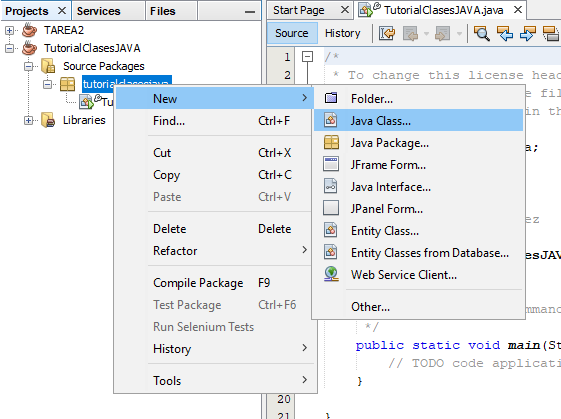 |
| Paso 2: Crear los atributos
Escribir los atributos de la clase Auto
Atributo de tipo String que será la marca del automovil
Atributo de tipo int que es el modelo del automovil |
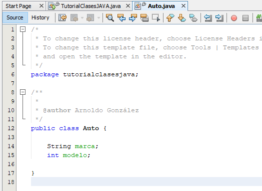 |
| Paso 3: Crear el método constructor
Inicializar los atributos por medio del constructor
Para ello se escribe dentro de los parámetros del constructor los atributos del automovil
Utilizar this.atributo para hacer referencia a cada atributo y se igual al parámetro |
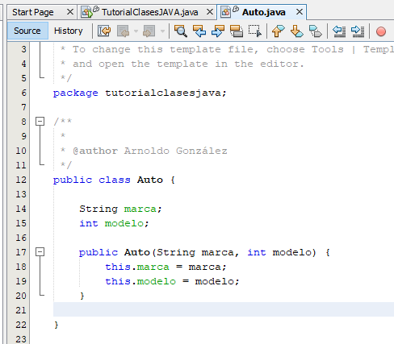 |
| Paso 4: Crear un método
Crear un método para ver las características del automovil
Este método sera public para poder acceder desde cualquier otra clase
Es de tipo void porque no retorna ningún valor |
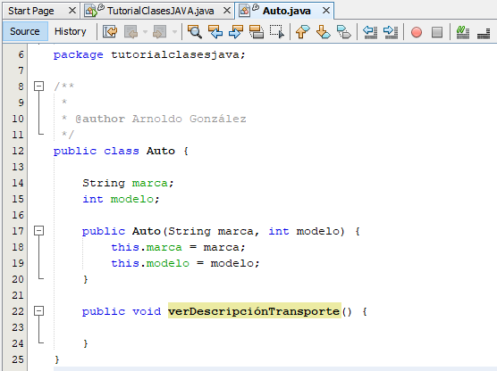 |
| Paso 5: Dar las instrucciones al método
Imprimir la marca del automovil instanciando el parámetro con this.marca
Imprimir el modelo del automovil instanciando el parámetro con this.modelo |
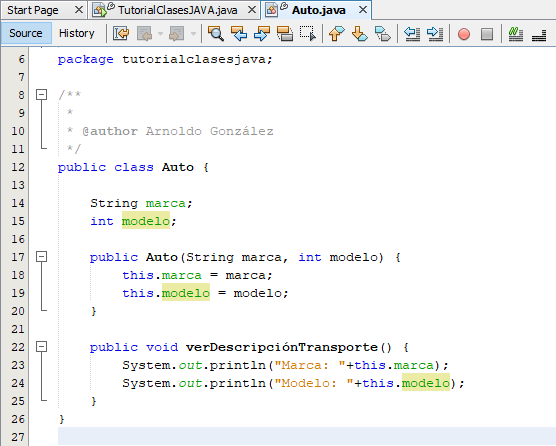 |
| Paso 6: Crear getters y setters
Click derecho sobre cualquier parte del programa
Dirigirse a Refactor
Dar click en Encapsulate Fields |
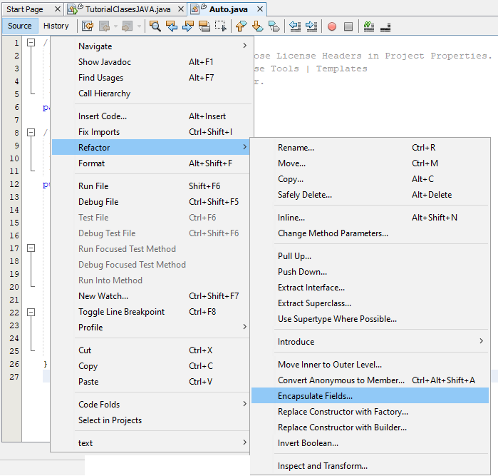 |
| Paso 7: Crear getters y setters
Se abrirá una ventana donde estarán los atributos de la clase Auto
Dar click en Select All, para seleccionar todos los atributos
Click en Refactor |
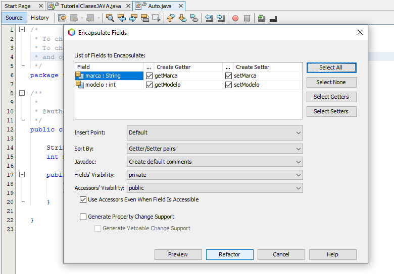 |
| Paso 8: Getters y Setters creados
Se abran creado los getters y setters
Los atributos de la clase auto serán de tipo private |
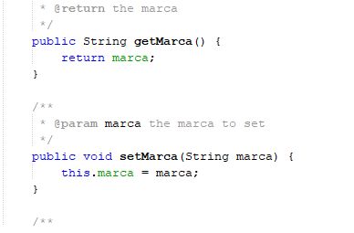
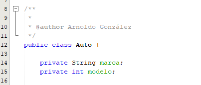
|
| Paso 9: Crear una nueva clase
Crear una nueva clase como se vio en el paso 1
Esta clase se llamará Transporte |
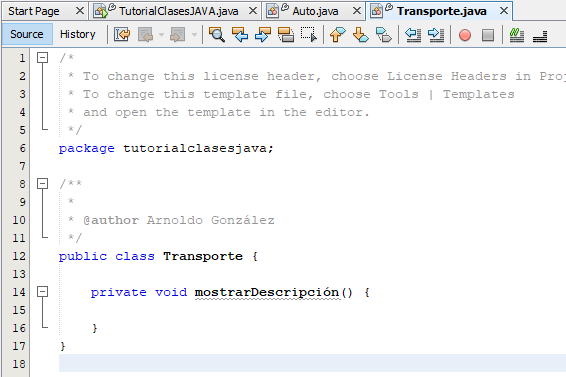 |
| Paso 10: Crear un método en la clase Transporte
Crear una clase denominada mostrarDescripción
Instanciarla en el método constructor de la clase |
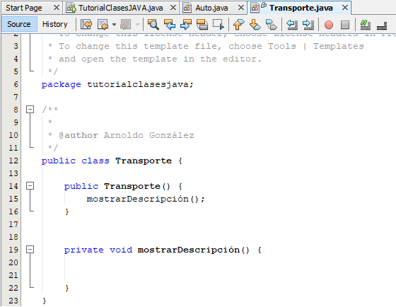 |
| Paso 11: Instancia de la clase Auto a la clase Transporte
En el método mostrarDescripción
Llamar a la clase a la que se quiere instanciar Auto
Ponerle un nombre a la variable nuevoAuto
Igualar con new, la clase y los parámetros que tiene dicha clase
En los parámetros se debe escribir los atributos de la clase Auto
Instanciar el método de la clase Auto con nuevoAuto.Método |
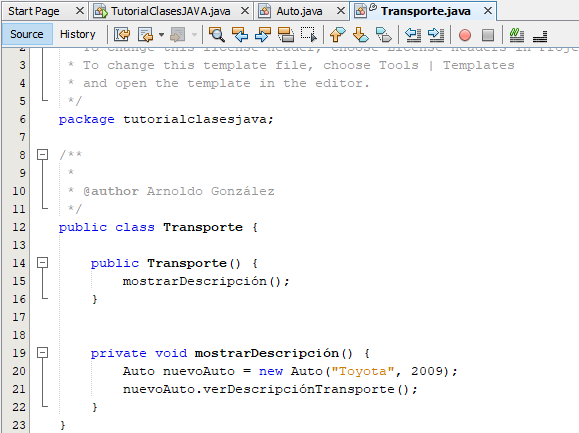 |
| Paso 12: Accerder a los atributos de la clase Auto
Instanciar el nombre variable y el atributo que se quiere obtener
Para accerder a los atributos debe ser por medio de getAtributo |
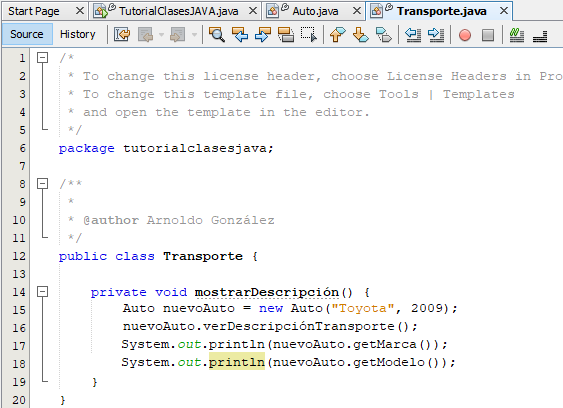 |
| Paso 13: Instanciar en el main la clase Transporte
Se esribe en el main new Transporte para instanciar el método constructor de la clase Transporte |
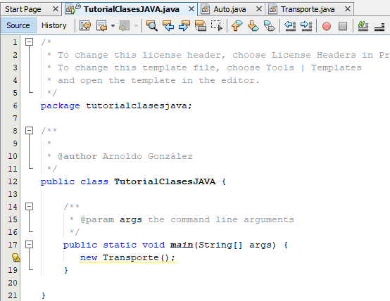 |
| Paso 14: Ejecutar el programa
Ejecutar con el botón Run
| 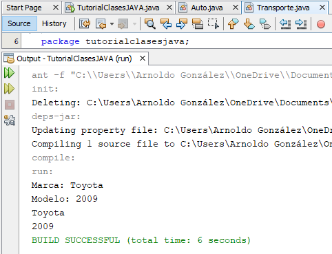 |